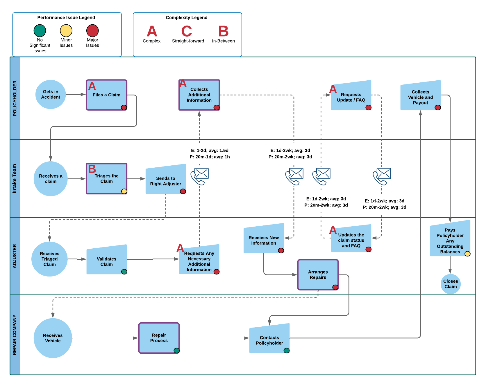

During my last year of Engineering Science at the University of Toronto, I was fortunate to participate in a multidisciplinary capstone design course. With four other outstanding colleagues, we undertook a project offered by Liscena, a start-up working towards automating auto insurance claim processes. Throughout the year, I was able to grow considerably as both a design engineer and as a person.
The image below summarizes the main challenges we were tackling. Adjusters, the employees of insurance carriers who are responsible for adjudicating and paying out claims, are often overwhelmed by their daily workload. They handle on average 150 claims a day, with 30% of their time spent on low-complexity tasks. The goal of our project is to create a product that could improve the claims process and reduce the calling times required between adjusters and policyholders.
Fig.1 - Problem definition, objectives and solution of our design.
We designed a configurable first notice of loss (FNOL) form for claim filing, as well as a chat interface between claimants and adjusters to handle information requests, status checks and FAQs, which we estimate would help insurance carriers save $18 USD per claim.
Iterations & Solution
I believe the most important aspect of the design process is iterations.
The team initially developed a set of objectives, metrics and constraints based on design for X’s (DfXs). However, after consulting with our supervisor, we realized that our problem was poorly framed, leading to a set of very loosely connected requirements. Since two of our team members are also our clients, we often times could not draw a discernible line between the company needs and the project requirements.
We eventually digressed from the traditional requirements model and invested into business process models, which consists of diagrams that outline the workflow of a business. By designing a business process diagram for the claims process, we were able to easily identify the main pain points in an adjuster’s daily routine and scoping the challenges appropriately to adapt to the timeline of the capstone project. We were then able to come up with specific requirements tailored to each subproblem.

Fig.2 - Business process diagram outlining current claims process.
Our solution has also drifted from its initial state. At first, the client focused on designing a messenger chatbot for the FNOL claim filing process. I implemented the flow using DialogFlow API and Node.js framework. However, I concluded that the bot was not a viable solution for this task. It was not robust against user inputs and was prone to error, especially due to the lengthy and complex tree of questions. It also did not allow the user to change responses easily.
After the setback, the team brainstormed once again and settled on a dynamic form, which is a more conversational and interactive way of presenting a form. After speaking to several insurance carriers, we realized that each company has their own question flow. To adapt to the versatility of the form, we decided to implement a customizable and flexible FNOL form. Depending on the user input, the policyholder will be asked different questions and prompted to traverse down various branches of the tree. I implemented the backend using an RESTful API architecture to return the next question to ask the user and save their previous answer into a database table.
On the chat interface end, I implemented majority of the chatbot flow for checking status updates and extending rental period and kept the framework as modular as possible. The video below shows a short demo of the two functions. My design facilitates the addition of features and allows the product to be scalable. I also came up with a keyword implementation to detect whether the user would like to be assisted by a human.
Aside from the basic flow, I also challenged myself and designed value-added features to improve our solution:
Restart the conversation if the policyholder answers the validation questions incorrectly 3 times to avoid infinite loops
Switch to a different chatbot function while having already in the process of a path (e.g. status check)
Integrate status updates with databases to be consistent with real-world data
Set the only allowable rental extension durations one week and two weeks while all other time slots are invalid.
Growth
This project allowed me to develop a set of important teamwork skills. We had regular meetings, set clear goals, and prompted inputs and opinions from members. I have improved my communication skills and acquired knowledge in multiple areas of software engineering.
I recognize that one of my greatest highlights is my work ethics. In this project, I would always deliver my work on time and sometimes even offer to help other team members with their share. However, being somewhat introverted, it is also evident that one of my weaker areas is in communication.
In lower year courses, I was accustomed to individually brainstorm and discuss results at the next meeting. However, in this course, this was embedded in our meetings and we had to be quick on our feet to contribute to the information exchange. Initially, I provided minimal feedback and was not active in helping with team decisions by asking redundant questions. I was not familiar with the technical concepts that were brought up or the specific implementation of a software solution. I realized that the ability to effectively communicate one’s thoughts is a valuable skill to have, not only in my professional career but also in life in general.
I worked towards developing my interpersonal skills by noting down all the concepts with which I was not familiar and researching on the technical side of a web service implementation. By the end of the year, I gained tremendous knowledge in software architecture and client-server models. Furthermore, I contributed more to team discussions and raised contentious issues in a constructive way. My improvement was also appreciated by the team based on the feedback they had given me.
Conclusion
The project overall was quite successful. The client was very satisfied with our problem definition, design assessment and contribution to their product. I was able to grow considerably as a person in terms of my engineering design knowledge, design approaches and software skills. It had been my honour to work with these talented individuals and I hope the best of luck in their future endeavours.
Fig.3 - The team, featuring Paul Suk, Kyle Bimm, Arkady Arkhangorodsky, Hao Sheng and I (left to right).
CONTACT
Feel free to contact me if you have any questions.